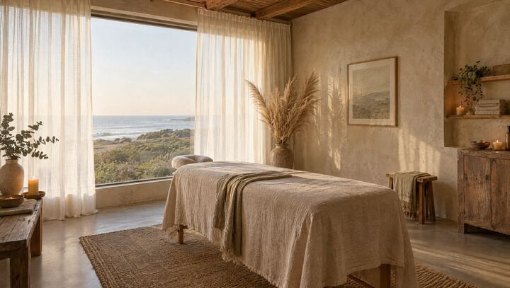
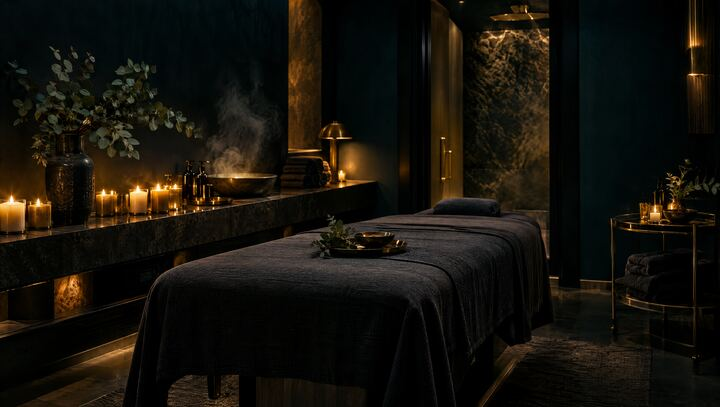

Mismo contenido, cuatro personalidades. Abrí cada una, navegala en el celular y en la compu, y decime cuál te representa. Después mezclamos lo que más te guste.

Arena & SalTonos arena y terracota, tipografía serif, galería tipo revista, mucha luz. Cercana y orgánica.
Blanco y verde eucalipto, grilla bento, tratamientos en pestañas, beneficios. Profesional y clara.

Noche OceánicaAzul profundo y dorado, carta de rituales, galería horizontal, animaciones suaves. Lujo contenido.
Una sesión contada minuto a minuto mientras bajás. Imágenes fijas que cambian, capítulos, colores que mutan.